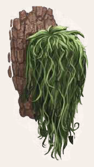

Der Traschbart ist eine Flechtenart, die auf der Rinde von Bäumen wächst. Traschbart verdankt seinen Namen dem grünen Gelecht, das wie ein Bart vom Baum herunterhängt, und ihm ein unheimliches Aussehen verleiht. Die frische Flechte ist für ihren modrigen Geruch berüchtigt.

Suchschwierigkeit: -3
Bestimmungsschwierigkeit: -2
Anwendungen: 1/1/2/2/3/3
Wirkung:
Roh:
Berührung: keine
Einatmung: keine
Verzehr: Bei Fieberkrankheiten eingenommen, frisch oder getrocknet als Pulver, kann Traschbart die SP pro Tag um 1 reduzieren.
Traschbart-Salbe verhindert, dass als Folge der Gilbe der Kranke auch noch Jahresieber bekommen kann.
Verarbeitet: siehe Rezepte
Preis: 6 / 18 Silbertaler
Rezepte:
Pflanzliche Hilfsmittel: Traschbartsalbe
Haltbarkeit:
Roh: siehe Haltbarmachung